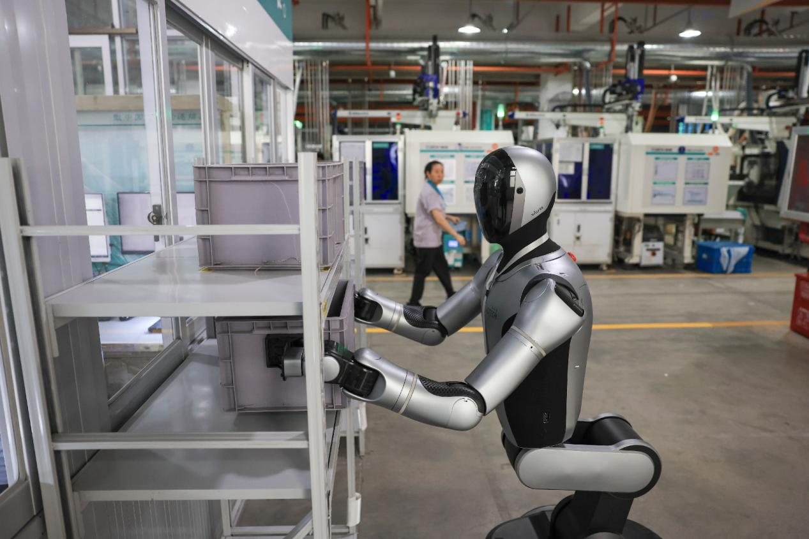
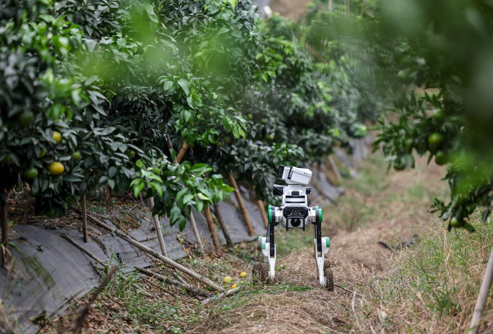

El sector de la robótica ha experimentado un crecimiento constante en sus exportaciones y una implementación cada vez más extendida, tanto en el ámbito industrial como en la vida cotidiana a nivel global. Según datos publicados por la Administración General de Aduanas de China, en 2025 las exportaciones de robots industriales superaron por primera vez a las importaciones, lo que marca la transición del país hacia una posición de exportador neto de robots industriales.
El siguiente desafío consiste en lograr que estas máquinas no solo sean funcionales, sino verdaderamente indispensables. ¿Cómo pueden ayudar mejor a los trabajadores humanos? ¿De qué manera pueden asumir tareas que son sucias, tediosas, peligrosas o exigentes —las llamadas tareas «4D» (por sus siglas en inglés: dirty, dull, dangerous, demanding), caracterizadas por ser riesgosas, monótonas o altamente repetitivas—? Responder a estas cuestiones se ha convertido en una prioridad fundamental para los desarrolladores de robótica en toda China.
En la industria manufacturera pesada, por ejemplo, los robots implementados por China Construction Science and Industry Corp. Ltd. en estaciones de trabajo de estructuras de acero operan de forma continua y sin fatiga, aumentando la eficiencia de las líneas de producción entre un 22 % y un 40 %. Esta automatización ayuda a compensar la escasez de mano de obra cualificada y acelera los plazos de entrega de componentes prefabricados. Gracias a sistemas de visión láser 3D, estos robots mantienen una precisión de posicionamiento de hasta un milímetro. En las inspecciones de calidad de las soldaduras, la tasa de aceptación en la primera revisión supera el 99,5 %.
Claves en las empresas de logística
Los centros logísticos plantean desafíos distintos. Las instalaciones de clasificación de gran volumen exigen velocidad y precisión en condiciones que cambian constantemente.
“Los paquetes en los centros de distribución varían enormemente en cuanto a forma y rigidez: desde cajas de cartón resistentes hasta bultos blandos o de formas irregulares. Si una caja está dañada o su distribución de peso es desigual, los brazos robóticos convencionales pueden tener dificultades para agarrarla o, incluso, quedar bloqueados”, explica el responsable del equipo técnico de Robot Era, una empresa china especializada en robótica e inteligencia encarnada (embodied intelligence).

Para hacer frente a condiciones de trabajo complejas, los robots de Robot Era son capaces de determinar al instante el centro de gravedad y el material de un objeto al entrar en contacto con él. De este modo, ajustan rápidamente sus estrategias para realizar un agarre flexible. Los datos de pruebas en campo muestran que, al manipular paquetes reales, los robots de Robot Era pueden procesar más de 1.200 artículos por hora en su punto de máximo rendimiento, con una tasa de éxito en el agarre de aproximadamente el 95%.
Los entornos exteriores y no estructurados plantean un desafío adicional. En situaciones de respuesta ante emergencias o inspección industrial, los robots deben desplazarse a través de atmósferas tóxicas, terrenos inestables, lodo, escombros y condiciones de escasa visibilidad provocadas por la lluvia o la nieve. Los robots cuadrúpedos modernos han sido diseñados para percibir en tiempo real los cambios en las condiciones del terreno y adaptar su movimiento de forma autónoma para evitar obstáculos.
Liu Chen, director de desarrollo de productos en Deep Robotics —empresa con sede en Hangzhou—, destacó iniciativas conjuntas con el departamento de gestión de emergencias de la provincia de Zhejiang, que incluyen robots equipados con inteligencia artificial (IA) destinados a tareas de reconocimiento y respuesta ante inundaciones.
Los robots cuadrúpedos modernos están
diseñados para percibir los cambios
del terreno y adaptar su movimiento
Según Liu, estos robots no solo pueden desplazarse de forma autónoma por terrenos complejos, sino que también son capaces de transportar equipos de reconocimiento e inspección. Actualmente, se utilizan para detectar peligros, realizar tareas de monitoreo ambiental y brindar apoyo en operaciones de búsqueda y rescate.
Si bien el hardware determina las capacidades físicas de un robot, su verdadera inteligencia reside en su habilidad para adaptarse a escenarios impredecibles del mundo real. Históricamente, trasladar un robot de una fábrica a otra requería una recalibración exhaustiva en cada nueva ubicación.
Deep Robotics ha resuelto este desafío mediante el desarrollo de una arquitectura lista para su implementación. Una vez que un robot cuadrúpedo aprende a identificar un instrumento específico en una fábrica (Fábrica A), su sistema de IA integrado permite transferir directamente dicha capacidad. Al ser trasladado a otra planta (Fábrica B), el robot puede reconocer e interactuar de inmediato con equipos similares. Este intercambio de conocimientos entre distintas instalaciones reduce considerablemente el tiempo necesario para la configuración y puesta en marcha en nuevos entornos.

“Los robots que operan en entornos dinámicos del mundo real dependen de un cerebro encarnado (embodied brain), lo cual exige el desarrollo coordinado de múltiples capacidades: comprensión de tareas, memoria del entorno, navegación autónoma, manipulación física y toma de decisiones orientada a la seguridad”, explicó Liu.
“No se trata simplemente de añadir un modelo de gran escala; la IA debe comprender realmente las leyes que rigen el mundo físico. Con este fin, Deep Robotics sigue avanzando en la investigación y el desarrollo de su cerebro encarnado”, añadió.
En el primer semestre de 2026, los envíos de robots humanoides en China superaron las 40.000 unidades, lo que representa el 97 % del total mundial. Un informe de 2026 sobre el desarrollo de la industria de la robótica humanoide señala que estos robots están pasando rápidamente de pruebas a pequeña escala a su implementación rutinaria y a aplicaciones a gran escala.
El mayor mercado mundial
Expertos del sector destacan que China —el mayor mercado mundial de robots industriales— cuenta con una cadena industrial completa, una gran capacidad de respuesta en la cadena de suministro y una notable competitividad en cuanto a costos, todo ello respaldado por años de experiencia acumulada en el ámbito de la manufactura. Al mismo tiempo, China cuenta con una gran variedad de escenarios de aplicación en sectores como la manufactura, la logística y los servicios, lo que genera un volumen abundante de datos y proporciona a las empresas chinas de robótica una amplia experiencia en diversos entornos del mundo real.
A medida que la tecnología sigue evolucionando a un ritmo cada vez más acelerado, se espera que la industria robótica china acelere la modernización de sus sistemas robóticos integrales, orientándolos hacia productos más avanzados e inteligentes.